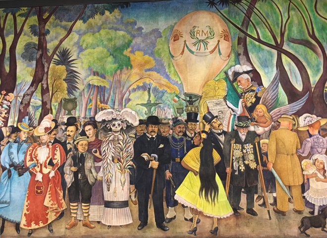
The Museo Mural Diego Rivera is home to one of his most famous works - “Dream of a Sunday Afternoon in the Alameda Central” - a 15m-long mural painted in 1947, featuring many recognisable historical figures grouped around a ‘catrina’ (skeleton). Both Rivera, who appears as an ‘ugly child’, and Frida Kahlo stand beside the catrina. The museum was built in 1986 to house the mural after its original location, the Hotel del Prado, was wrecked by the 1985 earthquake.
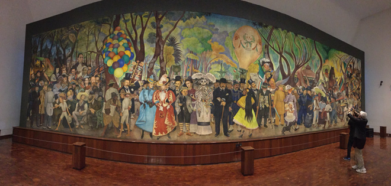
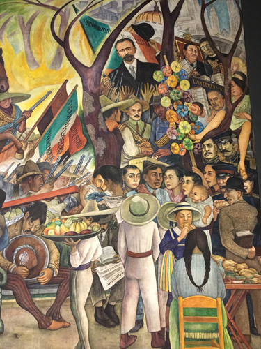
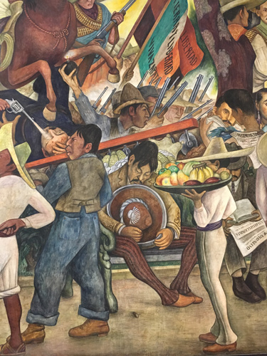
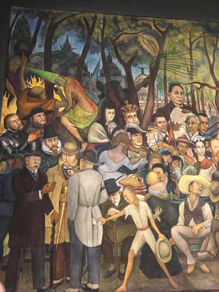
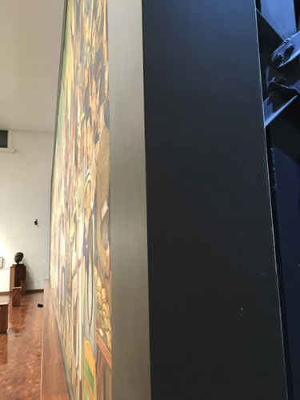
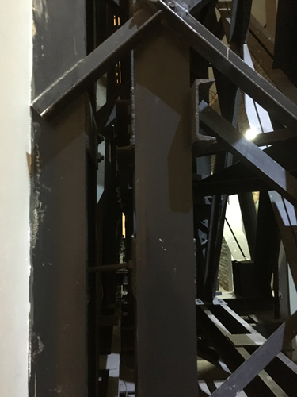
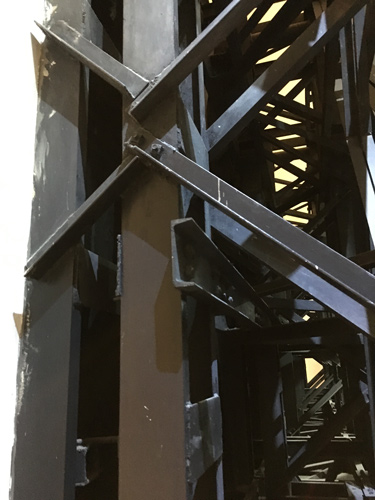
The Museum was also host to another, topical exhibition about Rivera and the Day of the Dead.
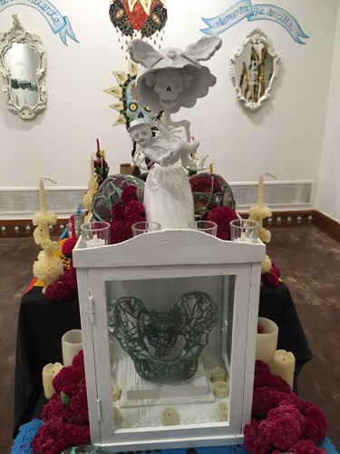
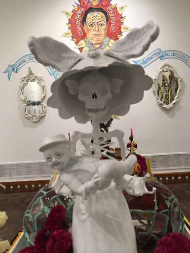
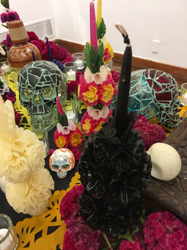
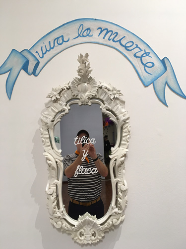
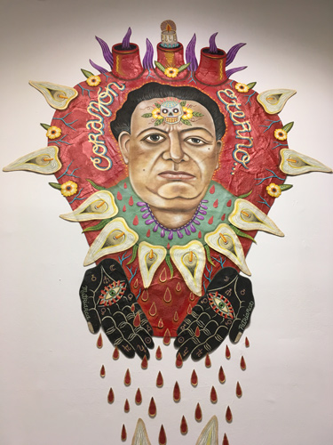
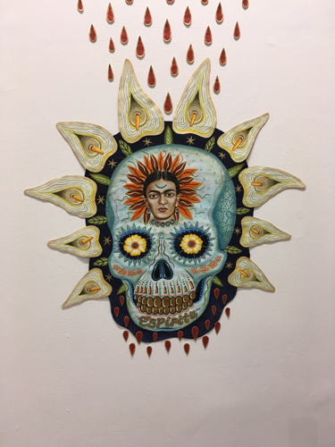
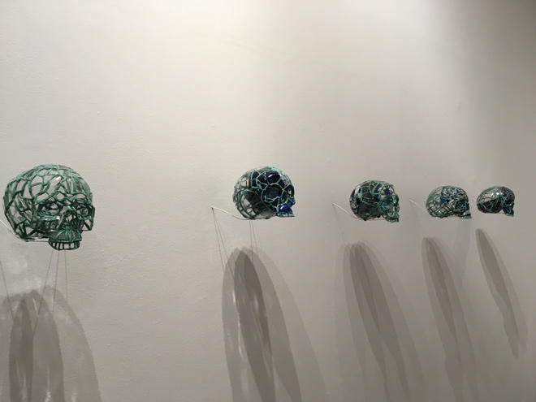
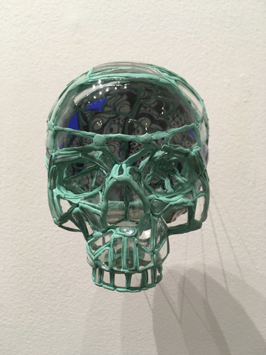
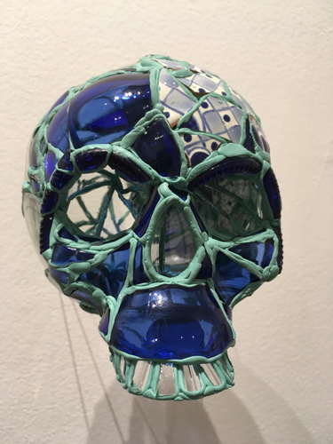
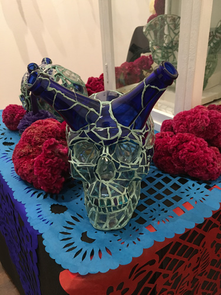
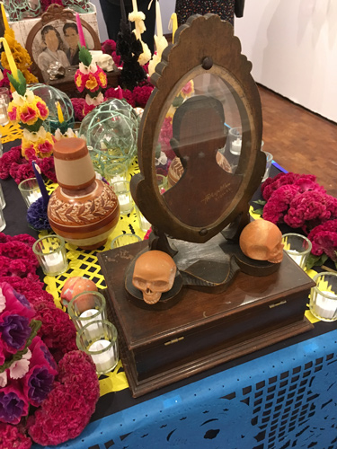
"Man, Controller of the Universe" (1934) is another fresco by Diego Rivera. Originally commissioned for US$21,000 to be installed in the lobby of New York's Rockerfeller Centre in 1933 with the title "Man at the Crossroads", the Communist Rivera fell out with Rockerfeller due to his inclusion of the character of Lenin - an anathema to the arch-capitalist Rockerfeller. The mural was plastered over and Rivera recreated it in Mexico City at the Palacio de Bellas Artes and also added the characters of Trotsky, Engels and Marx.
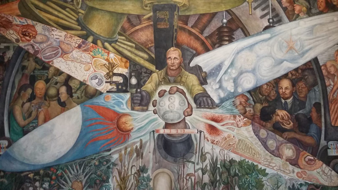
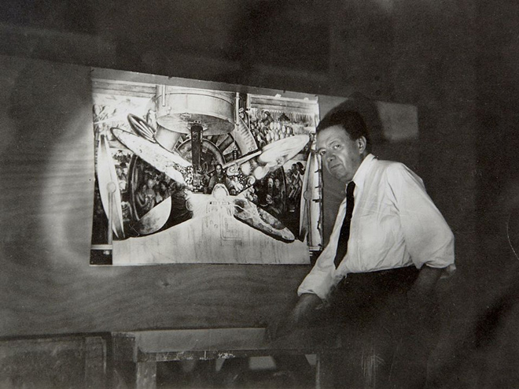
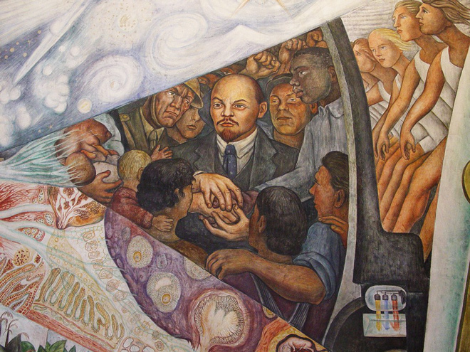
And, back at our hotel, we got invited to a party!
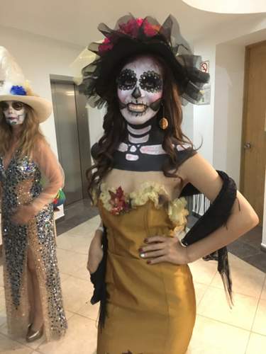
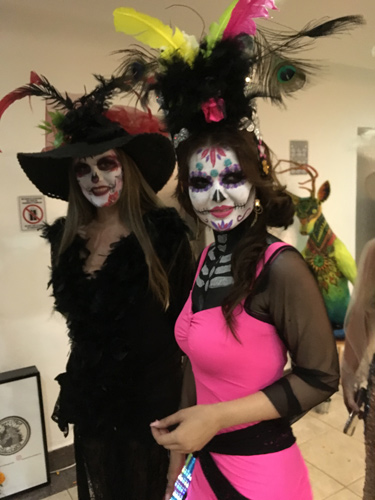
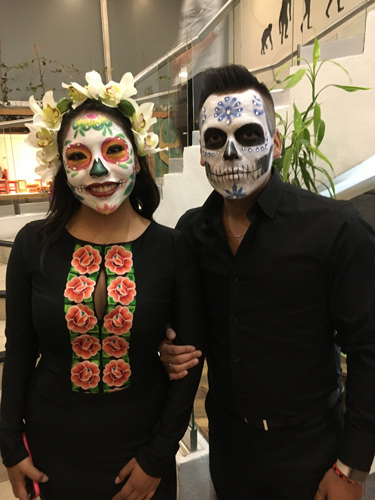
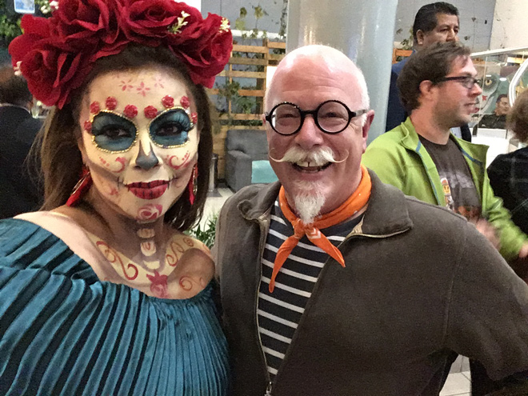